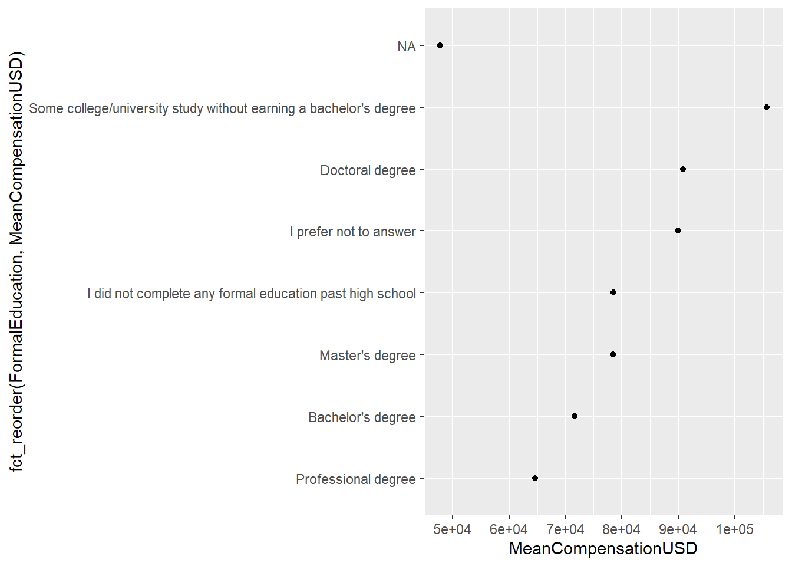

Poglavje 3 Nizi, kategorične spremenljivke in datumi (OSNUTEK)
Pogosto se pri delu s podatki srečamo s posebnimi podatkovnimi tipi, kot so nizi, kategorične spremenljivke in datumi. Z nizi smo že delali na prvi dveh predavanjih, ampak nad njimi nismo izvajali pretirano kompleksnih funkcij. Delali smo tudi s kategoričnimi spremenljivkami, čeprav se tega morda nismo zavedali. S temi podatkovnimi tipi lahko torej delamo z relativno malo znanja. Seveda pa za kvalitetno delo s podatki potrebujemo tudi orodja za bolj podrobno delo s takšnimi tipi. V tem predavanju bomo spoznali kako delati s takšnimi spremenljivkami v okviru zbirke tidyverse ter predstavili praktične primere, dobre prakse in pasti pri delu z njimi.
3.1 Nizi
3.2 Kategorične spremenljivke
Kategorične spremenljivke so spremenljivke, ki lahko zavzamejo samo vnaprej določene vrednosti. Delimo jih na:
- Nominalne spremenljivke. To so spremenljivke brez ureditve. Na primer, spol ali vrsta avtomobila.
- Ordinalne spremenljivke. To so spremenljivke, ki imajo smiselno ureditev. Na primer, stopnja izobrazbe ali šolski uspeh.
V R uporabljamo za delo s kategoričnimi spremenljivkami t. i. faktorje (ang. factor). Ti se od spremenljivk tipa niz razlikujejo v tem, da se v spremenljivki hrani informacija o vseh možnih vrednostih. Prav tako ni mogoče faktorju dodati vrednosti, ki je ni v množici možnih vrednosti, kar služi kot varovalka pred napakami pri vnosu podatkov.
Poglejmo si uporabo faktorja na dveh preprostih primerih, kjer bomo sami ustvarili spremenljivki. Kasneje si bomo ogledali še delo s faktorji na primeru realnih podatkov, kjer bomo ponovno uporabili podatke o zaposlitvah na področju podatkovnih ved.
Kot primer nominalne spremenljivke si oglejmo dneve v tednu. Obstaja 7 možnih vrednosti.
dan_v_tednu <- c("torek", "četrtek", "nedelja", "tork", "sreda")Sedaj so dnevi v tednu shranjeni kot nizi. Kaj so slabosti takšnega shranjevanja kategoričnih podatkov? Prvič, nimamo nobenega varovala pred tipkarskimi napakami – R je četrti vnos prebral kot tork in ga tako tudi shranil:
dan_v_tednu## [1] "torek" "četrtek" "nedelja" "tork" "sreda"Drugič, če želimo razvrstiti to spremenljivko, razvrščanje ne bo smiselno, saj se bodo vrednosti razvrstile po abecedi:
sort(dan_v_tednu)## [1] "četrtek" "nedelja" "sreda" "torek" "tork"Da se izognemo tem težavam je bolje, če spremenljiko za katero vemo, da bo zasedla eno od vnaprej določenih vrednosti, shranimo kot faktor. V R za to uporabimo funkcijo factor(). Poizkusimo sedaj narediti faktor iz spremenljivke dan_v_tednu.
dan_v_tednu_fac <- factor(dan_v_tednu)
dan_v_tednu_fac## [1] torek četrtek nedelja tork sreda
## Levels: četrtek nedelja sreda torek torkOpazimo, da je sedaj spremenljivka drugačnega tipa, saj hrani tudi informacijo o možnih vrednostih oziroma ravneh (ang. levels). Ampak v tem primeru so te ravni napačne (ne zajame vseh 7 dni v tednu, poleg tega pa vsebuje tudi eno napačno vrednost). Funkcija factor() privzeto kot ravni nastavi vse vrednosti v podani spremenljivki. Če želimo, ji lahko podamo dodaten argument levels, kjer ročno določimo, katere ravni bodo v spremenljivki. V kolikor to vemo vnaprej, je dobra praksa da podamo tudi ta argument.
dan_v_tednu_fac <- factor(dan_v_tednu, levels = c("ponedeljek", "torek", "sreda", "četrtek",
"petek", "sobota", "nedelja"))
dan_v_tednu_fac## [1] torek četrtek nedelja <NA> sreda
## Levels: ponedeljek torek sreda četrtek petek sobota nedeljasort(dan_v_tednu_fac)## [1] torek sreda četrtek nedelja
## Levels: ponedeljek torek sreda četrtek petek sobota nedeljaOpazimo dvoje: sedaj lahko spremenljivko uredimo glede na dan v tednu in nesmiselne vrednosti se spremenijo v NA. Faktorju torej ne moremo prirediti vrednosti, ki ni enaka eni izmed vrednosti v ravneh. Da dostopamo do vseh ravni faktorja, uporabimo funkcijo levels():
levels(dan_v_tednu_fac)## [1] "ponedeljek" "torek" "sreda" "četrtek" "petek"
## [6] "sobota" "nedelja"Včasih imajo kategorične spremenljivke tudi smiselno razvrstitev po velikosti, ki pa se običajno ne da numerično izmeriti. Kot primer si poglejmo šolski uspeh, ki lahko zavzame 5 vrednosti. V kolikor želimo, da faktor hrani tudi informacijo o tem, da obstaja smiselna razvrstitev po velikosti, dodamo argument ordered = TRUE.
uspeh <- factor(c("odlično", "dobro", "dobro", "prav dobro"),
levels = c("nezadostno", "zadostno", "dobro", "prav dobro", "odlično"),
ordered = TRUE)
uspeh## [1] odlično dobro dobro prav dobro
## Levels: nezadostno < zadostno < dobro < prav dobro < odličnoOpazimo, da imamo sedaj pri izpisu nivojev dodatno informacijo o razvrstitvi uspeha. V praksi nam to omogoča primerjamo, medtem ko tega pri faktorjih, ki nimajo razvrstitve po velikosti, ne moremo narediti.
uspeh[2] > uspeh[1]## [1] FALSEdan_v_tednu_fac[2] > dan_v_tednu[1]## Warning in Ops.factor(dan_v_tednu_fac[2], dan_v_tednu[1]): '>' not meaningful
## for factors## [1] NAPoleg prednosti, ki smo jih že omenili (varovanje pred napakami in smiselna razvrstitev nivojev) imajo faktorji tudi posebno vlogo pri raznih statističnih modelih in modelih strojnega učenja. Nekatere metode eksplicitno zahtevajo faktorje. Prav tako razlikujejo med nominalnimi in ordinalnimi faktorji, kar se pozna na rezultatih. Relativno preprost primer tega je linearna regresija, ki pa je izven obsega te delavnice. Vsekakor pa si je to vredno zapomniti, v kolikor se boste kdaj ukvajrali s podobnimi modeli in boste želeli uporabiti kategorične spremenljivke.
Poglejmo si uporabo faktorjev na realni podatkovni množici. Ponovno bomo delali s podatki o zaposlitvah na področju podatkovnih ved. Preberimo podatke in ponovimo nekaj operacij, ki smo jih spoznali na prvem predavanju. Prav tako bomo izbrali samo podmnožico stolpcev za bolj jasen prikaz.
library(tidyverse)
ds_jobs <- read_csv2("./data-raw/DS-jobs.csv") %>%
select(Country, Age, EmploymentStatus,
FormalEducation, CompensationAmount, ExchangeRate) %>%
filter(!is.na(ExchangeRate)) %>%
mutate(CompensationUSD = CompensationAmount * ExchangeRate) %>%
filter(CompensationUSD <= 2500000, CompensationUSD >= 10000)
ds_jobs## # A tibble: 3,186 x 7
## Country Age EmploymentStatus FormalEducation CompensationAmo~ ExchangeRate
## <chr> <dbl> <chr> <chr> <dbl> <dbl>
## 1 Austral~ 43 Employed full-t~ Bachelor's deg~ 80000 0.802
## 2 Russia 33 Employed full-t~ Bachelor's deg~ 1200000 0.0174
## 3 Taiwan 26 Employed full-t~ Master's degree 1100000 0.0333
## 4 United ~ 25 Employed part-t~ Bachelor's deg~ 20000 1
## 5 United ~ 33 Employed full-t~ Doctoral degree 100000 1
## 6 Russia 22 Employed full-t~ Bachelor's deg~ 624000 0.0174
## 7 Colombia 34 Employed full-t~ Master's degree 156000000 0.000342
## 8 Germany 41 Independent con~ I did not comp~ 150000 1.20
## 9 Poland 29 Employed full-t~ Master's degree 126000 0.281
## 10 United ~ 35 Employed full-t~ Doctoral degree 133000 1
## # ... with 3,176 more rows, and 1 more variable: CompensationUSD <dbl>Imamo dve spremenljivki, ki bi jih bilo smiselno shraniti kot faktorje – EmploymentStatus in FormalEducation. Pretvorimo sedaj ti spremenljivki v faktorje. Pri tem pustimo kar privzeto nastavitev, da se kot nivoji uporabijo vse vrednosti v stolpcih.
library(tidyverse)
ds_jobs <- ds_jobs %>%
mutate(EmploymentStatus = factor(EmploymentStatus),
FormalEducation = factor(FormalEducation))
ds_jobs## # A tibble: 3,186 x 7
## Country Age EmploymentStatus FormalEducation CompensationAmo~ ExchangeRate
## <chr> <dbl> <fct> <fct> <dbl> <dbl>
## 1 Austral~ 43 Employed full-t~ Bachelor's deg~ 80000 0.802
## 2 Russia 33 Employed full-t~ Bachelor's deg~ 1200000 0.0174
## 3 Taiwan 26 Employed full-t~ Master's degree 1100000 0.0333
## 4 United ~ 25 Employed part-t~ Bachelor's deg~ 20000 1
## 5 United ~ 33 Employed full-t~ Doctoral degree 100000 1
## 6 Russia 22 Employed full-t~ Bachelor's deg~ 624000 0.0174
## 7 Colombia 34 Employed full-t~ Master's degree 156000000 0.000342
## 8 Germany 41 Independent con~ I did not comp~ 150000 1.20
## 9 Poland 29 Employed full-t~ Master's degree 126000 0.281
## 10 United ~ 35 Employed full-t~ Doctoral degree 133000 1
## # ... with 3,176 more rows, and 1 more variable: CompensationUSD <dbl>levels(ds_jobs$EmploymentStatus)## [1] "Employed full-time"
## [2] "Employed part-time"
## [3] "Independent contractor, freelancer, or self-employed"levels(ds_jobs$FormalEducation)## [1] "Bachelor's degree"
## [2] "Doctoral degree"
## [3] "I did not complete any formal education past high school"
## [4] "I prefer not to answer"
## [5] "Master's degree"
## [6] "Professional degree"
## [7] "Some college/university study without earning a bachelor's degree"3.2.1 Sprememba razvrstitve faktorja
Kot smo omenili že pri dnevih v tednu imajo velikokrat tudi faktorji, ki niso razvrščeni po velikosti, neko smiselno razvrstitev. Razvrstitev pa lahko tudi kasneje spremenimo. Ta operacija je običajno uporabna pri vizualizaciji. Poglejmo si, na primer, kako so plače povezane z izobrazbo. Za vizualizacijo rezultatov bomo uporabili razsevni diagram:
ds_jobs_agg <- ds_jobs %>%
group_by(FormalEducation) %>%
summarise(MeanCompensationUSD = mean(CompensationUSD))
ds_jobs_agg## # A tibble: 8 x 2
## FormalEducation MeanCompensationU~
## <fct> <dbl>
## 1 Bachelor's degree 71665.
## 2 Doctoral degree 90856.
## 3 I did not complete any formal education past high school 78470.
## 4 I prefer not to answer 90023.
## 5 Master's degree 78411.
## 6 Professional degree 64614.
## 7 Some college/university study without earning a bachelor's~ 105675.
## 8 <NA> 47833.ggplot(ds_jobs_agg, aes(x = FormalEducation, y = MeanCompensationUSD)) +
geom_point() +
coord_flip()
Ta graf je sicer zelo informativen, ampak bi s težavo hitro ugotovili, kako so nivoji faktorja razvrščeni glede na plačo. ggplot razvrsti vrednosti glede na to, kako so razvrščene v faktorju:
levels(ds_jobs$FormalEducation)## [1] "Bachelor's degree"
## [2] "Doctoral degree"
## [3] "I did not complete any formal education past high school"
## [4] "I prefer not to answer"
## [5] "Master's degree"
## [6] "Professional degree"
## [7] "Some college/university study without earning a bachelor's degree"Morda bi bilo bolje tak graf urediti glede na vrednosti spremenljivke MeanCompensationUSD. Za to moramo določiti novo razvrstitev te spremenljivke. Za to obstaja v paketu forcats, ki je del tidyverse, funkcija fct_reorder().
ggplot(ds_jobs_agg, aes(x = fct_reorder(FormalEducation, MeanCompensationUSD), y = MeanCompensationUSD)) +
geom_point() +
coord_flip()
Razvrstitev lahko uredimo tudi ročno s funkicjo fct_relevel().
3.2.2 Preimenivanje obstoječih in določanje novih nivojev
Nivoje faktorjev lahko preimenujemo s funkcijo fct_recode().
ds_jobs <- ds_jobs %>%
mutate(EmploymentStatus = fct_recode(EmploymentStatus,
"full-time" = "Employed full-time",
"part-time" = "Employed part-time",
"other" = "Independent contractor, freelancer, or self-employed"))
head(ds_jobs$EmploymentStatus)## [1] full-time full-time full-time part-time full-time full-time
## Levels: full-time part-time otherČe želimo dodati nov nivo uporabimo funckcijo fct_expand().
ds_jobs <- ds_jobs %>%
mutate(EmploymentStatus = fct_expand(EmploymentStatus, "trainee"))
levels(ds_jobs$EmploymentStatus)## [1] "full-time" "part-time" "other" "trainee"3.2.3 Razbitje numerične spremenljivke na intervale
Velikokrat želimo kakšno numerično spremenljivko segmentirati na določene intervale. Na primer, pri določanju avtomobilskih zavarovalnih premij lahko zavarovance segmentiramo glede na starost. V R za to uporabimo funkcijo cut(). Razdelimo spremenljivko Age na intervale, kjer bodo osebe razdeljene do 25 let, nad 25 in to 35 let, nad 35 do 50 let, in nad 50 let.
ds_jobs <- ds_jobs %>%
mutate(AgeInterval = cut(Age, breaks = c(0, 25, 35, 50, 100)))
ds_jobs_agg <- ds_jobs %>%
group_by(AgeInterval) %>%
summarise(CompensationByAge = mean(CompensationUSD))
ggplot(ds_jobs_agg, aes(x = AgeInterval, y = CompensationByAge)) + geom_point()
3.3 Datumi in ure
Delo z datumi in urami morda na prvi pogled deluje precej enostavno. Vendar pa zaradi različnih fizikalnih zakonitosti ali človeških konstruktov lahko pride do težav. Na primer, vsako leto nima 365 dni. Prav tako v nekaterih časovnih conah 3. ura zjutraj ne sledi vedno 2. uri, saj pride do premika ure.
Za delo z datumi bomo uporabljali paket lubridate. Glavni komponenti v tem paketu sta datum (date) in čas (time), ter združena komponenta datum in čas (and. datetime) S tem paketom lahko datume ustvarimo na 2 načina:
Z nizom:
library(lubridate) ymd("2021-04-02")## [1] "2021-04-02"ymd("2021/04/02")## [1] "2021-04-02"ymd(20210402)## [1] "2021-04-02"dmy("02.04.2021")## [1] "2021-04-02"ymd_hms("2021-04-02 12:01:00") # Tipa datetime.## [1] "2021-04-02 12:01:00 UTC"ymd(20210402, 20210403)## [1] "2021-04-02" "2021-04-03"S posameznimi komponentami:
make_date(2021, 4, 2)## [1] "2021-04-02"make_datetime(2021, 4, 2, 12, 1, 0)## [1] "2021-04-02 12:01:00 UTC"
Opazimo, da pri datumu in času spremenljivka hrani tudi informacijo o časovnem pasu. Privzeto lubridate dela s časovnim pasom UTC (Coordinated Universal Time), ki je naslednik GMT (Greenwich Mean Time). Prednost tega časovnega pasu je predvsem v tem, da se ne prilagaja spremembi ure v pomladnih in jesenskih mesecih. Te spremembe lahko privedejo do napak pri računanju z datumi in časi, tako da je računanje v UTC bolj varno. Seveda pa lahko ročno nastavimo drugi časovni pas z argumentom tz. Paket lubridate uporablja IANA časovne pasove (https://www.iana.org/time-zones), kateri so definirani s kombinacijo celine in države. Na primer, za Ljubljano bi časovni pas nastavili tako:
ymd_hms("2021-04-02 12:01:00", tz = "Europe/Ljubljana")## [1] "2021-04-02 12:01:00 CEST"Pomembno je torej, da vemo, v katerem časovnem pasu so bile opravljene meritve v naših podatkih, da lahko potem ustrezno pretvorimo spremenljivko v časovno. Seveda pa lahko tudi pretvarjamo časovne spremenljivke med časovnimi pasovi. Za to uporabimo funkcijo with_tz(). Vsakemu času v določenem časovnem pasu lahko priredimo nek čas v drugem časovnem pasu. V kolikor želimo bolj robustno računati z datumi in urami, potem lahko vedno datume pretvorimo v UTC čas, naredimo izračune in potem pretvorimo nazaj v lokalni časovni pas.
my_datetime <- ymd_hms("2021-04-02 12:01:00", tz = "Europe/Ljubljana")
my_datetime## [1] "2021-04-02 12:01:00 CEST"my_datetime_UTC <- with_tz(my_datetime, tz = "UTC")V R je časovni pas namenjen samo izpisu datumov in časov. Sama vrednost spremenljivke ostane nespremenjena. To lahko preverimo tako, da odštejemo en datum od drugega, kar nam vrne razliko v času:
my_datetime - my_datetime_UTC## Time difference of 0 secsV kolikor smo narobe prebrali datum v začetku (na primer, v podatkih je bil datum v UTC, prebrali pa smo v lokalnem času) zgornja pretvorba med časovnimi pasovi ni ustrezna, saj bomo s tem zajeli napačen čas. V tem primeru moramo uporabiti funkcijo force_tz(). Predlagamo, da udeleženci sami poizkusijo, kaj naredi ta funkcija, tako da z njo pretvorijo my_datetime v UTC in potem izračunajo razliko, podobno kot smo to naredili zgoraj.
Kadar delamo sekvence datumov in časov te upoštevajo premik ure.
datetime_dst <- seq(ymd_hms("2011-10-30 00:00:00", tz = "Europe/Ljubljana"),
ymd_hms("2011-10-30 04:00:00", tz = "Europe/Ljubljana"),
by = "30 min")
datetime_dst## [1] "2011-10-30 00:00:00 CEST" "2011-10-30 00:30:00 CEST"
## [3] "2011-10-30 01:00:00 CEST" "2011-10-30 01:30:00 CEST"
## [5] "2011-10-30 02:00:00 CEST" "2011-10-30 02:30:00 CEST"
## [7] "2011-10-30 02:00:00 CET" "2011-10-30 02:30:00 CET"
## [9] "2011-10-30 03:00:00 CET" "2011-10-30 03:30:00 CET"
## [11] "2011-10-30 04:00:00 CET"with_tz(datetime_dst, tz = "UTC")## [1] "2011-10-29 22:00:00 UTC" "2011-10-29 22:30:00 UTC"
## [3] "2011-10-29 23:00:00 UTC" "2011-10-29 23:30:00 UTC"
## [5] "2011-10-30 00:00:00 UTC" "2011-10-30 00:30:00 UTC"
## [7] "2011-10-30 01:00:00 UTC" "2011-10-30 01:30:00 UTC"
## [9] "2011-10-30 02:00:00 UTC" "2011-10-30 02:30:00 UTC"
## [11] "2011-10-30 03:00:00 UTC"Pozorni moramo biti tudi na kombiniranje datumov. V kolikor uporabimo funkcijo c(), ta običajno privzeto nastavi časovni pas prvega podanega elementa. Vsekakor pa je to odvisno. TODO: Ali je to res? Ker dobim drugačne rezultate kot pa so v knjigi.
3.3.1 Računanje z datumi in časi
Vsaka časovna spremenljivka, ki vsebuje datum in čas, je sestavljena iz komponent. Te so leto, mesec, dan, ura, minuta in sekunda. Za dostop do posameznih komponent imamo na voljo več funkcij:
year()month()mday(). Dan v mesecu.wday(). Dan v tednu. Privzeto se začne z nedeljo. To lahko spremenimo z argumentomweek_start.hour()minute()second()
Poglejmo sedaj kaj vračajo te funkcije:
x <- now()
x## [1] "2021-06-03 14:47:26 CEST"year(x)## [1] 2021month(x)## [1] 6mday(x)## [1] 3wday(x)## [1] 5wday(x, week_start = 1)## [1] 4hour(x)## [1] 14minute(x)## [1] 47second(x)## [1] 26.90963S komponentami lahko tudi spreminjamo dele časovne spremenljivke:
mday(x) <- 5
x## [1] "2021-06-05 14:47:26 CEST"Pri računanju s časovnimi enotami v lubridate poznamo tri razrede:
- trajanja (ang. duration). Čas v sekundah. Funkcije
dseconds(),dminutes(),ddays(),dweeks()indyears(). Pri trajanjih se vedno uporabi pretvorba, da ima vsak dan 24 ur in vsako leto 365.25 dni. Slednje predstavlja povprečno šteilo dni v letu. Tako da bo funkcijadyears(4)vedno vrnila število sekund, ki ustreza 4x365.25 dnem, ki imajo vsak po 24 ur. - periode (ang. period). Čas v človeških enotah kot je na primer teden. Funkcije
seconds(),minutes(),days(),weeks(),months()inyears(). - intervali (ang. interval). Časovni interval med dvema točkama.
Pozoren bralec je morda opazil, da pri trajanjih nismo navedli funkcije za mesece. To je zaradi tega, ker imajo meseci lahko 28, 29, 30 ali 31 dni. Vsekakor bi pri izbiri osnovne enote za trajanja prišlo do neke arbitrarne odločitve, koliko dni vzamemo privzeto. 30 ali 31? V vsakem primeru bo vsaj polovica mesecev imela napačno trajanje. Pri dnevih in letih si lažje privoščimo posplošitev.
ddays(1)## [1] "86400s (~1 days)"days(1)## [1] "1d 0H 0M 0S"Poglejmo si preprost primer, kako dodati
my_datetime <- ymd_hms("2021/06/08 11:05:30", tz = "Europe/Ljubljana")
my_datetime + ddays(1)## [1] "2021-06-09 11:05:30 CEST"my_datetime + days(1)## [1] "2021-06-09 11:05:30 CEST"my_datetime + dminutes(120)## [1] "2021-06-08 13:05:30 CEST"my_datetime + minutes(120)## [1] "2021-06-08 13:05:30 CEST"my_datetime + months(2)## [1] "2021-08-08 11:05:30 CEST"Trajanja in periode so si očitno zelo podobni ampak imajo eno veliko razliko, kadar računamo z dnevi, tedni in leti. Prvič, kadar bomo uporabljali dyears() lahko hitro pride do težave, saj bomo prišteli 0.25 dneva. Poglejmo si to na primeru:
my_datetime + years(1)## [1] "2022-06-08 11:05:30 CEST"my_datetime + dyears(1)## [1] "2022-06-08 17:05:30 CEST"Opazimo, da smo prišteli 6 dodatnih ur. Drugič, kaj se zgodi, kadar prištejemo teden ali dan v času, ko pride do premika ure. Premik ure se je po lokalnem času zgodil 28. 3. 2021 ob 2 zjutraj.
my_datetime <- ymd_hms("2021/03/27 11:05:30", tz = "Europe/Ljubljana")
my_datetime + ddays(1)## [1] "2021-03-28 12:05:30 CEST"my_datetime + days(1)## [1] "2021-03-28 11:05:30 CEST"my_datetime + dweeks(1)## [1] "2021-04-03 12:05:30 CEST"my_datetime + weeks(1)## [1] "2021-04-03 11:05:30 CEST"Funkcija years() deluje kot bi pričakovali tudi na prestopnem letu:
my_datetime <- ymd_hms("2020/06/08 11:05:30", tz = "Europe/Ljubljana")
my_datetime + years(1)## [1] "2021-06-08 11:05:30 CEST"S funkcijami trajanja in period lahko tudi računamo, na primer:
dyears(2) + ddays(4) + dseconds(20)## [1] "63460820s (~2.01 years)"days(2) + minutes(20) + seconds(120)## [1] "2d 0H 20M 120S"5 * dminutes(20)## [1] "6000s (~1.67 hours)"5 * minutes(20)## [1] "100M 0S"Najbolje, da jo prikažemo na dveh primerih – premik ure in prestopno leto. Periode so bolj naraven prikaz za človeka.
my_datetime <- ymd_hms("2021/06/08 11:05:30", tz = "Europe/Ljubljana")
my_datetime + ddays(1)## [1] "2021-06-09 11:05:30 CEST"my_datetime + days(1)## [1] "2021-06-09 11:05:30 CEST"my_datetime + dminutes(120)## [1] "2021-06-08 13:05:30 CEST"my_datetime + minutes(120)## [1] "2021-06-08 13:05:30 CEST"my_datetime + dyears(1)## [1] "2022-06-08 17:05:30 CEST"my_datetime + years(1)## [1] "2022-06-08 11:05:30 CEST"my_datetime + months(2)## [1] "2021-08-08 11:05:30 CEST"3.4 Shranjevanje in branje podatkov
3.4.1 Delo z binarnimi datotekami
V programskem jeziku R lahko shranjujemo in nalagamo (v trenutno sejo R) spremenljivke kot binarne objekte na dva prevladujoča načina:
- S kombinacijo funkcij
save()inload(). - S kombinacijo funkcij
saveRDS()inreadRDS().
Pomembna razlika med prvim in drugim pristopom je, da lahko s prvim shranimo več spremenljivk naenkrat, z drugim pa samo eno. Na prvi pogled bi torej pričakovali, da je prvi pristop boljši, oziroma bolj zaželen. Ampak ima eno pomembno slabost, zaradi katere predlagamo uporabo drugega pristopa.
Funkcija save() shrani spremenljivke v trenutni seji R v datoteko s končnico rda ali RData. To naredi tako, da shrani tako vrednost spremenljivke kot tudi ime spremenljivke. To pomeni, da ko bomo takšno datoteko prebrali v novo sejo R, bomo ustvarili spremenljivke z enakimi imeni, kot smo jih shranili. Pri tem pa lahko pride do težav. Recimo, da imamo v trenutni seji R že nek nabor spremenljivk nato pa želimo vanjo prenesti še neke druge spremenljivke, ki smo jih pred časom shranili s funkcijo save() v datoteko saved-data.rda. Kaj se bo zgodilo, če bo katera od spremenljivk v naši trenutni seji imela enako ime kot ena od spremenljivk shranjenih v saved-data.rda? R bo enostavno to spremenljivko prepisal s spremenljivko, ki se je nahajala v tej rda datoteki. Takšen postopek dela je lahko torej nevaren, saj lahko nevede izbrišemo obstoječe spremenljivke.
Predlagamo torej uporabo druge kombinacije, torej funkcij saveRDS() in readRDS(). Funkcija saveRDS() shrani samo vrednost spremenljivke, ne pa tudi njenega imena, tako da ne pride do podobnih težav kot pri prvem pristopu. Končnica tako shranjenih datotek je rds. Poglejmo si uporabo teh funkcij.
x <- c(3, 6, 3, 7)
x## [1] 3 6 3 7saveRDS(x, "./my-saved-files/my-x.rds")
x2 <- readRDS("./my-saved-files/my-x.rds")
x2## [1] 3 6 3 7Vedno ko preberemo podatke v sejo R s funkcijo readRDS() ji moramo prirediti ime, saj je v rds datoteki shrnajena samo njena vrednost. S tem se tudi izognemo podobnim težavam kot pri funkcijah save() in load().
Pomanjkljivost shranjevanja rds datotek pa je v tem, da lahko naenkrat shranimo samo 1 spremenljivko. Ampak to pomanjkljivost lahko zaobidemo, tako da več spremenljivk enostavno shranimov v seznam (list()). Poglejmo si sedaj na primer, kako bi shranili več spremenljivk.
tmp_list <- list(
"x" = x,
"some_datetime" = my_datetime,
"ds_jobs" = ds_jobs
)
saveRDS(tmp_list, "./my-saved-files/my-list.rds")
read_list <- readRDS("./my-saved-files/my-list.rds")
names(read_list)## [1] "x" "some_datetime" "ds_jobs"x2 <- read_list[["x"]]
x2## [1] 3 6 3 7my_datetime2 <- read_list[["some_datetime"]]
my_datetime2## [1] "2021-06-08 11:05:30 CEST"ds_jobs2 <- read_list[["ds_jobs"]]
ds_jobs2## # A tibble: 3,186 x 8
## Country Age EmploymentStatus FormalEducation CompensationAmo~ ExchangeRate
## <chr> <dbl> <fct> <fct> <dbl> <dbl>
## 1 Austral~ 43 full-time Bachelor's deg~ 80000 0.802
## 2 Russia 33 full-time Bachelor's deg~ 1200000 0.0174
## 3 Taiwan 26 full-time Master's degree 1100000 0.0333
## 4 United ~ 25 part-time Bachelor's deg~ 20000 1
## 5 United ~ 33 full-time Doctoral degree 100000 1
## 6 Russia 22 full-time Bachelor's deg~ 624000 0.0174
## 7 Colombia 34 full-time Master's degree 156000000 0.000342
## 8 Germany 41 other I did not comp~ 150000 1.20
## 9 Poland 29 full-time Master's degree 126000 0.281
## 10 United ~ 35 full-time Doctoral degree 133000 1
## # ... with 3,176 more rows, and 2 more variables: CompensationUSD <dbl>,
## # AgeInterval <fct>